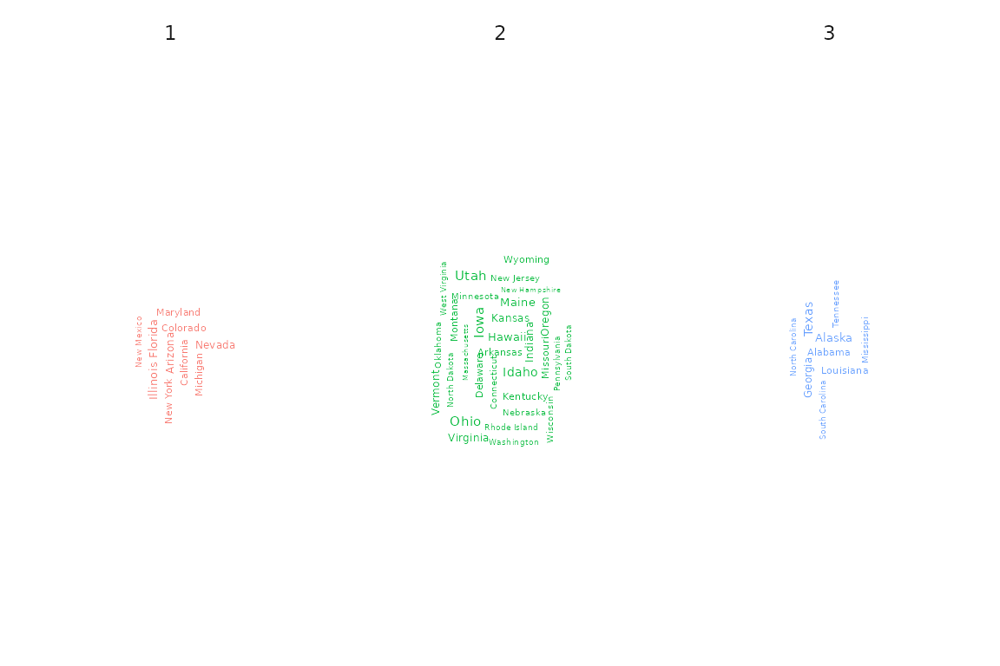

Functionality of fuzzyclara package (interactive)
Maximilian Weigert, Asmik Nalmpatian, Jana Gauß, Alexander Bauer
03.August 2022
vignette_shiny.RmdThis document gives an overview of the functionality provided by the R package fuzzyclara.
Clustering
Hard clustering
# TODO replace USArrests by a better dataset (maybe TourIST)
cc_fixed <- fuzzyclara(data = USArrests,
clusters = 3,
metric = "euclidean",
samples = 1,
sample_size = NULL,
type = "fixed",
seed = 3526,
verbose = 0)
cc_fixed## Clustering results
##
## Medoids
## [1] "New Mexico" "Oklahoma" "New Hampshire"
##
## Clustering
## [1] 2 2 2 3 2 2 3 3 2 2 3 1 2 3 1 3 3 2 1 2 3 2 1 2 3 3 3 2 1 3 2 2 2 1 3 3 3 3
## [39] 3 2 1 2 2 3 1 3 3 1 1 3
##
## Minimum average distance
## [1] 1.180717Fuzzy clustering
cc_fuzzy <- fuzzyclara(data = USArrests,
clusters = 3,
metric = "euclidean",
samples = 1,
sample_size = NULL,
type = "fuzzy",
m = 2,
seed = 3526,
verbose = 0)
cc_fuzzy## Clustering results
##
## Medoids
## [1] "Oklahoma" "Idaho" "Tennessee"
##
## Clustering
## [1] 3 3 2 2 3 3 2 2 3 3 2 1 2 2 1 2 2 3 1 3 2 3 1 3 2 1 1 3 1 2 3 3 3 1 2 2 2 2
## [39] 2 3 1 3 3 2 1 2 2 1 1 2
##
## Minimum average weighted distance
## [1] 1.830885Clustering with self-defined distance function and other distance functions
dist_function <- function(x, y) {
sqrt(sum((x - y)^2))
}
cc_dist <- fuzzyclara(data = USArrests,
clusters = 3,
metric = dist_function,
samples = 1,
sample_size = NULL,
type = "fuzzy",
m = 2,
seed = 3526,
verbose = 0)
cc_dist## Clustering results
##
## Medoids
## [1] "Oklahoma" "Idaho" "Tennessee"
##
## Clustering
## [1] 3 3 2 2 3 3 2 2 3 3 2 1 2 2 1 2 2 3 1 3 2 3 1 3 2 1 1 3 1 2 3 3 3 1 2 2 2 2
## [39] 2 3 1 3 3 2 1 2 2 1 1 2
##
## Minimum average weighted distance
## [1] 1.830885You can also use other distance functions from the proxy package like Gower, Manhattan etc. In order to specify arguments of the distance metric (e. g. p for Minkowski distance), you can use a self-defined distance function.
cc_manh <- fuzzyclara(data = USArrests,
clusters = 3,
metric = "manhattan",
samples = 1,
sample_size = NULL,
type = "fixed",
seed = 3526,
verbose = 0)
cc_manh## Clustering results
##
## Medoids
## [1] "New Mexico" "Oklahoma" "New Hampshire"
##
## Clustering
## [1] 2 2 2 3 2 2 1 3 2 2 3 1 2 3 1 3 3 2 1 2 3 2 1 2 3 3 3 2 1 3 2 2 2 1 3 3 3 3
## [39] 3 2 1 2 2 3 1 3 3 1 1 3
##
## Minimum average distance
## [1] 2.011671
dist_mink <- function(x, y) {
proxy::dist(list(x, y), method = "minkowski", p = 1)
}
cc_mink <- fuzzyclara(data = USArrests,
clusters = 3,
metric = dist_mink,
samples = 1,
sample_size = NULL,
type = "fixed",
seed = 3526,
verbose = 0)
cc_mink## Clustering results
##
## Medoids
## [1] "New Mexico" "Oklahoma" "New Hampshire"
##
## Clustering
## [1] 2 2 2 3 2 2 1 3 2 2 3 1 2 3 1 3 3 2 1 2 3 2 1 2 3 3 3 2 1 3 2 2 2 1 3 3 3 3
## [39] 3 2 1 2 2 3 1 3 3 1 1 3
##
## Minimum average distance
## [1] 2.011671Select optimal number of clusters
cc_number <- plot_cluster_numbers(
data = USArrests,
clusters_range = 2:6,
metric = "euclidean",
samples = 1,
sample_size = NULL,
type = "fixed",
seed = 3526,
verbose = 0)
cc_number
Plot of clustering results
# Enrich the USArrest dataset by area and state
USArrests_enriched <- USArrests %>%
mutate(State = as.factor(rownames(USArrests)),
Area = as.factor(case_when(State %in% c("Washington", "Oregon",
"California", "Nevada", "Arizona", "Idaho", "Montana",
"Wyoming", "Colorado", "New Mexico", "Utah", "Hawaii",
"Alaska") ~ "West",
State %in% c("Texas", "Oklahoma", "Arkansas", "Louisiana",
"Mississippi", "Alabama", "Tennessee", "Kentucky", "Georgia",
"Florida", "South Carolina", "North Carolina", "Virginia",
"West Virginia") ~ "South",
State %in% c("Kansas", "Nebraska", "South Dakota",
"North Dakota", "Minnesota", "Missouri", "Iowa", "Illinois",
"Indiana", "Michigan", "Wisconsin", "Ohio") ~ "Midwest",
State %in% c("Maine", "New Hampshire", "New York",
"Massachusetts", "Rhode Island", "Vermont", "Pennsylvania",
"New Jersey", "Connecticut", "Delaware", "Maryland") ~
"Northeast")))
Barplot
plot(x = cc_fuzzy, data = USArrests_enriched, variable = "Area")Wordcloud
plot(x = cc_fuzzy, data = USArrests_enriched, variable = "State",
type = "wordclouds")
Scatterplot
plot(x = cc_fuzzy, data = USArrests_enriched, type = "scatterplot",
x_var = "Murder", y_var = "Assault")## `geom_smooth()` using formula 'y ~ x'
plot(x = cc_fuzzy, data = USArrests_enriched, type = "scatterplot",
x_var = "Murder", y_var = "Assault",
focus = TRUE)PCA
plot(x = cc_fuzzy, data = USArrests_enriched, type = "pca",
group_by = "Area")
plot(x = cc_fuzzy, data = USArrests_enriched, type = "pca",
focus = TRUE)Silhouette
plot(x = cc_fuzzy, data = USArrests, type = "silhouette")## cluster size ave.sil.width
## 1 1 12 0.47
## 2 2 21 0.21
## 3 3 17 0.24